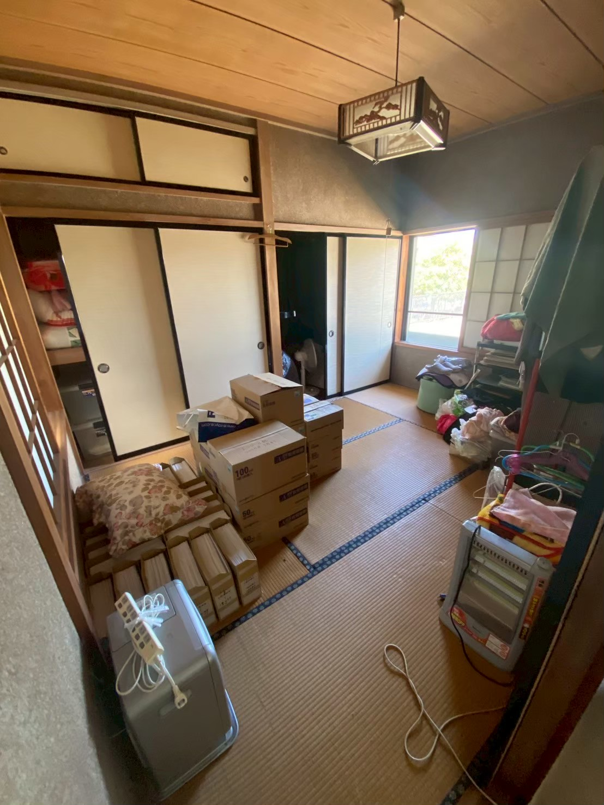
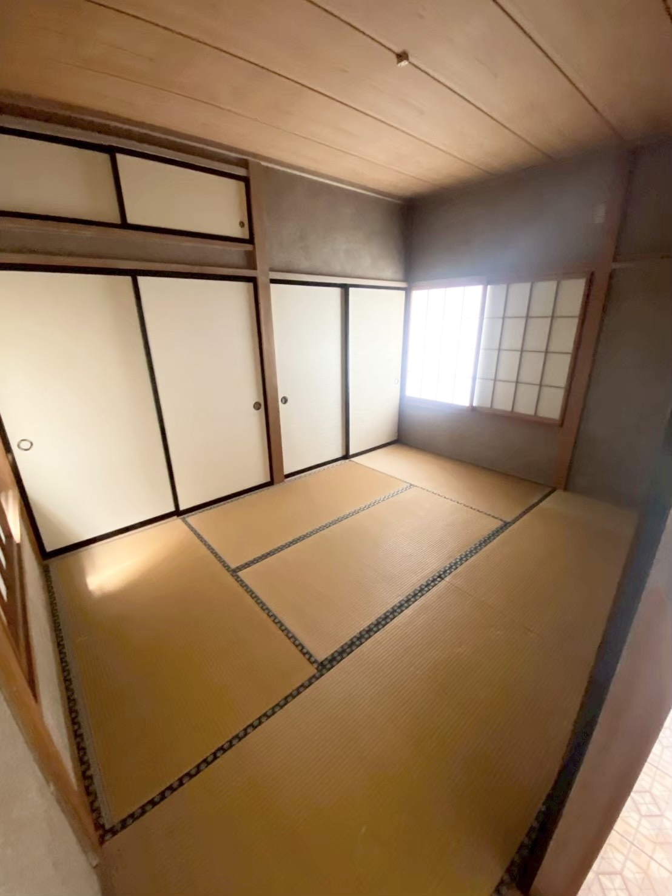
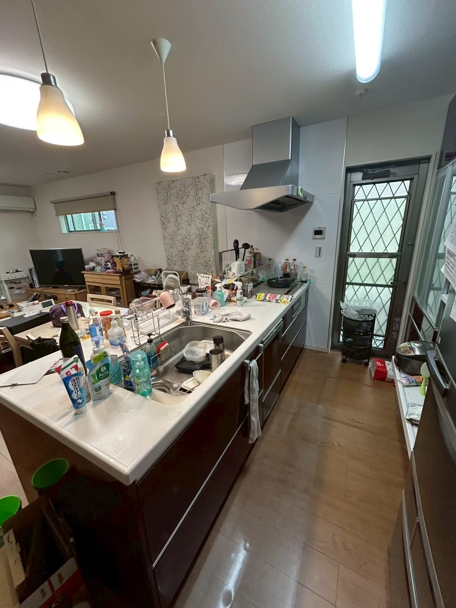
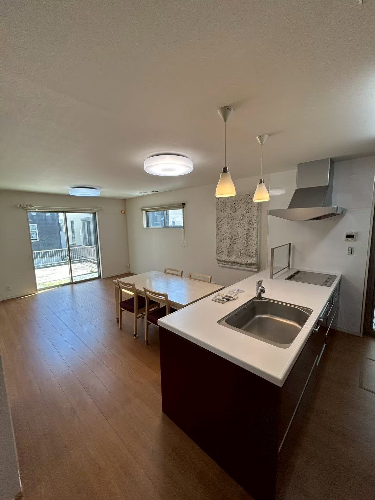
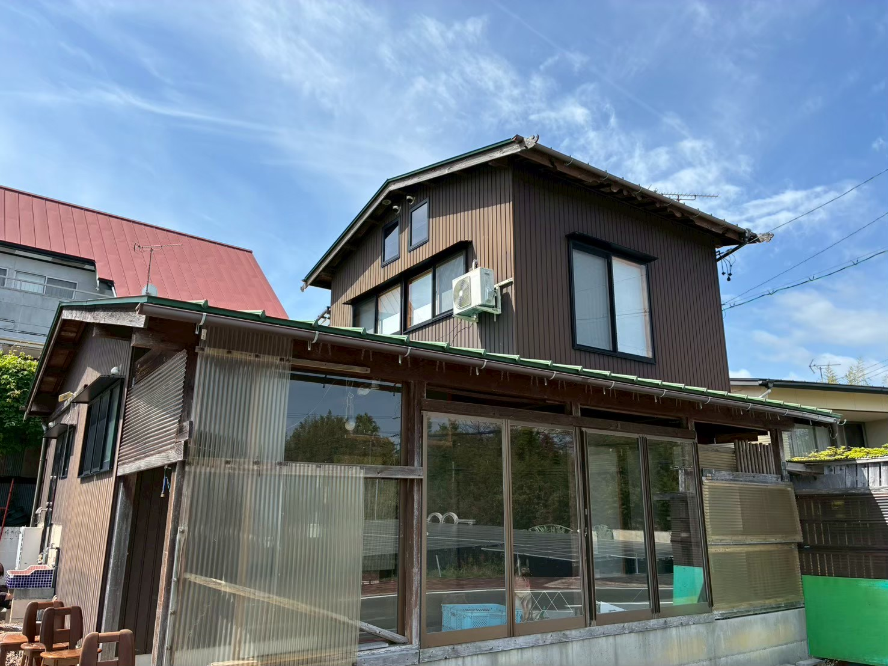
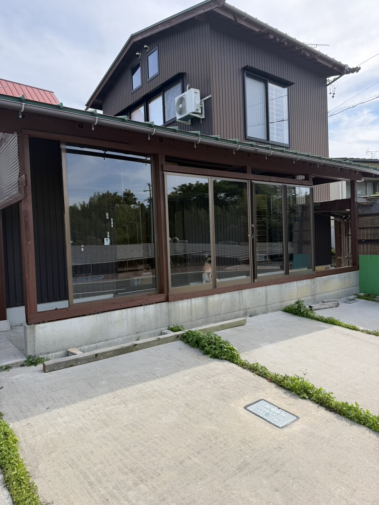
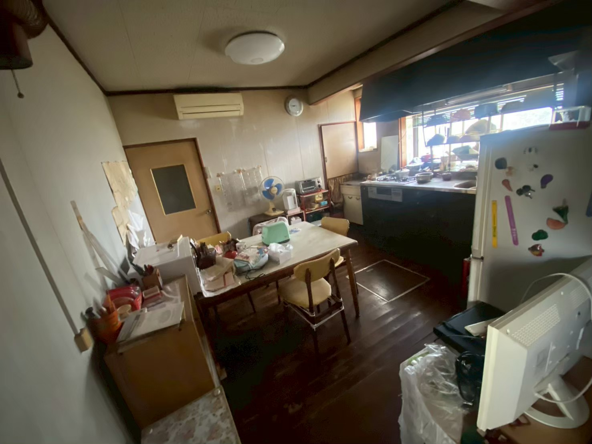
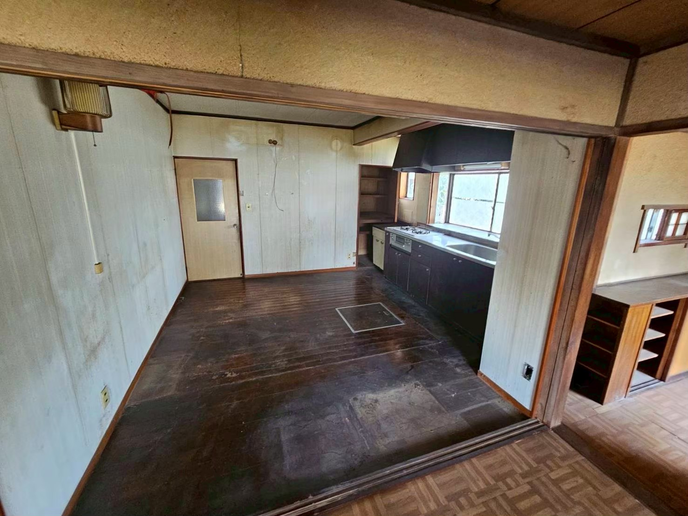
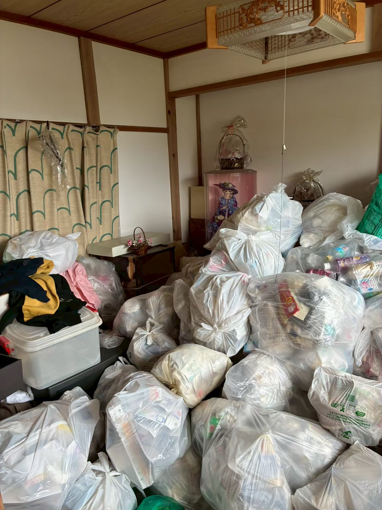
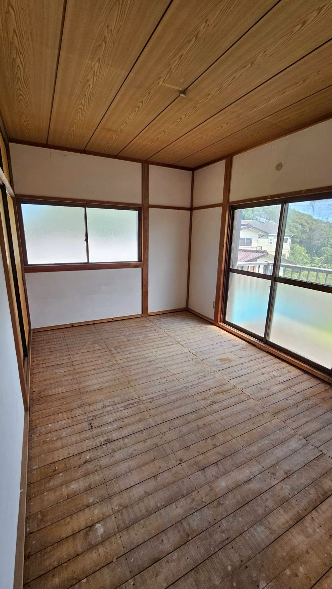

BEFOREAFTER浜松市中央区馬郡町住まいの状態を見極め、
住まいの状態を見極め、
次の使い方へ。
室内の状態を確認しながら、建物の良さを活かせる形へ整えた事例です。
空き家に残るのは、建物だけではありません。家財や暮らしの記憶を受け止め、建物の良さを見極めながら、次の住まい手につながる形へ整えます。
状態を確認し、家財整理を含めて引き受けることで、建物本来の明るさと使いやすさを取り戻した事例です。
まずは暮らしの痕跡が残る室内を整理し、建物の状態を確認。必要な手入れを重ね、次の住まい手を迎えられる状態へ整えました。

BEFORE
AFTER再生前の状態と、整えた後の住まいを対比してご紹介します。物件ごとの事情に合わせて、進め方を考えています。


BEFOREAFTER室内の状態を確認しながら、建物の良さを活かせる形へ整えた事例です。


BEFOREAFTER再生前の状態から、次の暮らしにつながる住まいを目指しました。


BEFOREAFTER建物の状態と地域の需要を踏まえ、活かし方を検討した事例です。


BEFOREAFTER所有者さまの事情を伺いながら、次の住まい手につなげた事例です。
「売る」だけで終わらせず、住まいが次にどう活かされるかまで考えます。
建物・家財・敷地・周辺環境を現地で確認し、再生できる可能性を丁寧に見極めます。
残置物の整理も含めて対応し、建物本来の明るさや使いやすさを見つめ直します。
再生後も、次の住まい手を迎えられる状態へ。地域に空き家を増やさない選択につなげます。
建物の状態や家財の有無にかかわらず、お話を伺います。